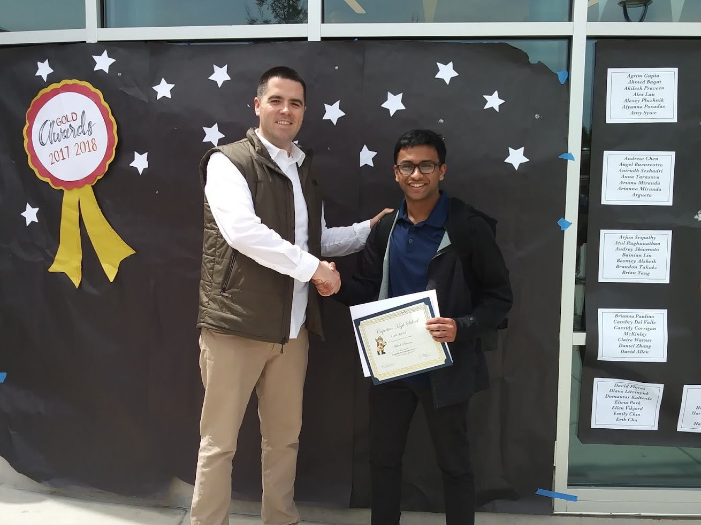

What happens when a Computer Science & Cybersecurity student TAs English for a year? [apraveen@cs.umd.edu / my website]
artwork: Cyberpunk 2077, an upcoming story-driven videogame from CD Projekt Red.
I find story-driven videogames to be the perfect intersection of computer science and writing. Not only is the code for the underlying game engine very structurally complex and sophisticated, but the game's story writing is layered, comprehensive, and immersive.
Reading and writing were always strong interests of mine, and so I naturally gravitated towards English. Not only did I find the relevant classes thoroughly enjoyable in high school, my teachers also opened my eyes to a much broader spectrum of literature and writing that I hadn't previously seen. In particular, I'd like to thank Mrs. Amanda Phelps-McQuaide, my American Literature teacher who was always open to talking about new ideas and helped me pick up new books amidst my hectic junior year schedule, and Mr. Kevin Morgan, who tolerated more of my excited interjections than he really should have.
I have Mrs. Phelps-McQuaide and Mr. Morgan (pictured) to thank for my gold award in British Literature, the highest distinction a teacher can provide to the best performing student in an entire subject at Cupertino High School.Computer Science has always been one of my main interests. As nuanced and intricate as it may be, however, there is no way to produce excellent prose in, say, RISC-V Assembly Code. Some may argue that writing code can be likened to an art, which I don't disagree with. I do think, however, that it's a long shot to compare writing code to writing actual compositions. I believe much more appropriate marriages of writing with my own major are videogames and computer science research, both formal and informal.
The header for this portfolio website talks a little bit about how videogames bring computer science and writing together, so I'll talk a little bit about research here.
I've selected below a few of my favorite reads in the realm of computer science. I find them to be another example of a beautiful intersection of the two fields that I've grown to love.
Apart from my interest in academia, however, I still find time for more heavy reading. My favorite books change every few months, but the genres I'm most interested in are also, strangely enough, somewhat intertwined with my computer science background. In particular, I'm a big fan of cyberpunk dystopias and fantastical imaginings of a technologically advanced future. My favorite author is currently Neal Stephenson.
As TAs, we had the unique opportunity to give lesson plans to our ENGL classes. Here are my lesson plans, and some of my thoughts regarding their creation, execution and revision.
Some lesson plans I gave as an English TA, the associated materials, and some of my thoughts on the experiences as a whole.
Lesson Plans are a fairly large part of being an English TA. Personally, I was very excited to give these lessons, as it was my opportunity to get up in front of the class as a whole and try and communicate important writing concepts. Here are two lessons that I prepared and gave over the course of my time as a TA.
Due to coronavirus-related complications, I wasn't able to provide in-person lesson plans for the second semester that I was a TA, but I was still able to make some key observations and learn from the experience. Here's what I have to show for it.
I grew to understand that learning must be individualized. It's not enough to produce one lesson and hope that you can tailor to all of your students, because that simply cannot end up being the case. I had this misconception ingrained in my head as I produced my lesson plans during the Fall 2019 semester, and was rightfully upset when I realized that some students were still not receiving the lesson as well as others were.
Little did I know then, however, that this wasn't a fault in my lesson (per se). This was in fact just a natural occurrence! By definition, we are all different, and therefore, we learn differently. In that sense, I came to the key realization after my first semester as a TA that there is no way to make a lesson 'perfect' for every single student right off the bat. Instead, one should try and craft a lesson to the best of their abilities, then follow the lesson up by providing supplemental instruction and other help for students who don't find the lesson that helpful.
In terms of difference between the two semesters I was a TA for, the difference was astronomical. This was mainly due to the advent of the noval coronavirus, which I'm certain everyone at this point has gotten sick of reading about. Regardless, I would like to mention it. Since lesson plans moved online, I noticed a few things. First, students were more eagerly reaching out via email. A large amount of confusion as a result of the transition left many students looking to TAs for extra guidance, seeing that they were students themselves. Despite the lack of in-person instruction, I feel like I was able to benefit from the unique experience of frequent email correspondence with students who experienced difficulties.
Additionally, adapting a lesson plan to fit an online learning environment was deceptively difficult. As a computer science major, I was enthralled at first- there's a slew of technological solutions for providing immersive alternative learning experiences for students online, but before I took that idea and ran away with it, I came to a very sobering realization.
We're in the middle of a pandemic. The stress that some students may be going through may be immense, and, leveraging my unique perspective as a TA for CMSC216 (Computer Systems), CMSC389E (Digital Logic Design through Minecraft), and ENEE200 (Engineering Ethics), I saw that sometimes, less is more. No matter how cool or sophisticated the use of cutting edge software or new experiences would be if I created a new lesson plan with them, students would have to put in time to learn about them. At the end of the day, despite the 'cool' factor of the new technology I could have used to structure a lesson, I decided to take the stress that students have been undergoing into account.
As such, I stuck to the stuff they knew. My lesson plan was no more than a revised presentation slide deck (this time with added 'slide notes' to provide students with the extra tidbits I may have added while presenting it live) and a worksheet version of the in-class activity that I had my Fall semester students work through.
Why did I do this? Some may ask that even while I stayed away from new, immersive technology, why did I refuse to even record a video for the class? My answer is time. Everyone is going through personal struggles during this difficult period. By analyzing the feelings and stresses of my peers, my students, and myself, I decided that my lesson plan would be optimized for time and understandability. As such, I structured them with those two things in mind:
A brief reflection on my lesson plan for the second semester of my TA experience.
I also produced a learning artifact to sum up my work this semester. You can find it here.
Observing and being observed felt a little weird at first. However, it was an essential part of the English TA experience in ENGL388V. As English TAs, each of us had to fulfill two requirements. Firstly, we had to observe another TA conducting their lesson, and see how they went about their routine, how they communicated with the students, and how they interacted with their professor.
We also had to be observed ourselves, and do our best to go about our regular TA routine while another TA was observing us.
I chose to observe my fellow UTA Lily, who was an animated personality in her 101 class.
Observing a fellow UTA was a great experience. I got to pick up a few tricks to try out with my own students, get a better idea of how the dynamic between a professor and their TA should be, and observe a whole new set of students and how they compared to my students.
This was an especially valuable experience because I've stayed with Professor Katherine Joshi for the duration of my ENGL TA career, so it was very interesting to see how another professor worked with their TA.
You can view a full record of my observations here.
I was observed by fellow UTA Trayonna Hutchins, who was great to have in the classroom with us.
Being observed felt a little odd at first, but I think the process was great overall. I was nervous to be observed by another TA and contemplated doing things differently in order to make the class more 'interesting' for my observer, but this would make the experience ingenuine.
As such, I decided to go about 'business as usual', and found the experience to be very smooth. I was lucky to naturally run into a few situations that I think would have been useful for Trayonna to take note of. In particular, I had a few interactions with Professor Joshi and a student or two.
With Professor Joshi, I first talked with her casually as I usually did when students broke away for group work or if there was a break in instruction. Although this may be more informal of a relationship than some may prefer to have with their instructor, I found that Professor Joshi's insight as an educator and a past college student was highly helpful. We also talked briefly about my lesson plan and the role I was looking to take in future instruction.
I also answered a student inquiry during this class, which I thought was a good point. With students, I try and establish a fairly informal role. I figure that since they already have the Professor to be formal with, they might as well just see me as a student who has already worked through the class, and has succeeded. In that sense, I aimed to be a source of advice and counsel for whoever needed it.
Overall, being observed was an interesting experience. With a little bit of conscious effort, I was able to go about class as it usually occurred, which hopefully resulted in a genuine observing experience for Trayonna. I feel that the goal here is to convey to other TAs that there are other ways to be a useful presence in the classroom outside of what they may be doing themselves, and I hope that I was able to convey this idea through my behavior.
Looking at other students' lesson plans was a very enriching experience. I'm very lucky to have peers who are bold and thorough in how they attempt to deliver lessons to their ENGL classes. I saw similarities in how they looked at new, exciting ways to promote engagement in the classroom, outside of the usual powerpoint+worksheet combination.
First-time UTAs come with a unique complication- they haven't yet delivered their lesson plans yet. As such, they're coming in without an idea of what to expect, and the results are lesson plans that vary greatly in style. While some students tried to adhere to exactly the same format that their professors made use of, other TAs worked to flip that style on its head and produce something entirely new. Other students still took a middleground approach, trying to strike a halfway point between innovative and traditional learning.
As a second time UTA, I was able to, in the very least, offer that point of view. Having the benefit of conducted a few lessons in front of the class already and gauging what they were receptive to, I believe I developed a general idea of which new idea would 'work' and which ones probably 'wouldn't'. I can also attest to some personal growth that I underwent after giving my first two lesson plans- specifically, I want to recount that at first, I thought that implementing new, exciting methods of learning was always the way to go when designing an engaging lesson. However, I later learned that it's very possible to develop an engaging lesson that still makes use of tried and true mediums like Powerpoints and Worksheets. In other words, aside from the medium used, an instructor is the centerpiece of a class. The way they conduct themselves directly affects the quality of the lesson they produce. I tried to emphasize this, and other points in the criticisms that I made.
Overall, these differences were great to observe. Despite the differences between the lesson plans that I looked at, I saw a common theme. All of these TAs had a desire to present material in a way that the students understood. In that sense, they prioritized learning, which I think is the purest goal of being an instructor of any sort.
Who I am: A computer science, data science and cybersecurity student with an interest in writing and English. Please feel free to take a look at my resume or personal website, both of which are linked below.
What follows is an essay detailing my ENGL388V experience over the course of these past two semesters. I had the unique experience of taking ENGL101H with Professor Joshi, then, in the following year, I served as her TA for two consecutive semesters. Over the course of this experience, I was able to pick up quite a bit.
A ~1000 word essay detailing my experiences in 388V which references the scholarship from ENGL101 that's most influenced me this semester.
ENGL388V has been a comprehensive English TA experience. What I thought was just a simple, limited role ended up becoming much more than that as I got acquainted with the 388V community, worked with students one-on-one, created lesson plans, and got to edit plenty of papers and other student pieces. Immersing myself in the scholarship and practice of English compared to my usual experience in computer science felt like a difference of night and day. I'd also like to add that I was a TA for CMSC216 (Introduction to Computer Systems) this semester, so I can truly put my English and CS experiences in parallel when I draw comparisons. Where CS work felt quantitative, objective, and nearly robotic, English TA work felt like it had a real life to it- working with students to help them put their ideas into sentences just felt like a more creative exercise.
This is not to say computer science isn't a creative art- there's a certain stylistic approach you can take to writing code that really does require you to flex your creative muscles. The basics of a creative art are present within computer science. I feel that by writing code with the aid of 'art' software (Mic Team), coding can end up being a true art, but it's otherwise a fairly incomplete way to express oneself. In other words, despite the software augments that allow coding and programming to become truly artistic pursuits, it still cannot match the freedom of expression that English provides. As you're writing code, you wish for it to fulfill test cases. Despite being provided with the illusion of choice in some cases, there usually is a mathematically optimal way to accomplish this. That's the key difference. No matter how good your writing is, one can never say with confidence that it's mathematically, or even decidedly optimal. Hundreds of factor such as audience, tone, credibility will determine how effective your writing is. Furthermore, some may find your writing to be excellent, and others still may find it to be complete garbage. This is the true discrepancy between computer programming and writing.
All in all, at first glance, some may think that programming affords the creator a similar creativity to writing. However, I argue that despite the freedom offered in programming, there is almost certainly a 'correct' way to do things- an optimal solution. It is not so when it comes to writing. Thanks to the innately subjective nature of English and the innately objective nature of Computer Science (whose basis lies in mathematics), writers are afforded at least a degree more of creativity than computer scientists. After being a TA for both these classes simultaneously, I can clearly see that. Furthermore, I was able to reinforce this distinction by recalling my experiences as a student in both these classes, during my freshman year.
My own writing process as a writer has evolved quite a bit over the past year. To put a personalized touch on the age-old adage, it's one thing to do well in a class, but it's a whole other world to be able to TA or teach for it well. I discovered that this was the case for the other classes that I TAd for this past year, and ENGL101 was no exception.
By having the opportunity to edit other students' work and help them formulate their essays based on their own ideas, I felt like I gained a lot of insight as a writer. Previously, I only really knew my own writing style, and didn't have much exposure to how other people thought and formulated their papers. After a year as a TA, I've seen my fair share of papers, and have picked up a fair bit of experience editing and helping people turn their own ideas into words, which is an entirely new level of difficulty compared to turning my own ideas into words. Regardless, by being put in the position of editor and pseudo-grader (when students asked me to see if their papers had any issues), I became a much better writer and reader. The British Psychology Association, among many others, agree when I say that teaching allowed me to become a much better student of English as well. (Research Digest) By seeing mistakes that other students commonly made, I was able to learn a lot more about being a good writer.
My overall experience was excellent. I definitely didn't expect the ENGL UTA program to have the depth that I've experienced, and I was pleasantly surprised with how this year went. As a mentor and leader, I feel like where I've improved the most is with my confidence. I recall a time during the fall semester when my suitmate was having a fair amount of trouble with his writing assignments, so, knowing I was an English TA, he asked me for help. Honored that he asked for my help, I worked with him for hours until his assignment was perfect. I remember that I was ridiculously nervous after he turned his paper in- I really wanted him to do well, and I hoped I hadn't streered him down the wrong path. I was absolutely relieved when he excitedly told me a few weeks later that he had gotten a 98% on his paper, up from the 80% he received on his previous big writing assignment in the class. After a bunch of experiences like that, my faith in my abilities increased, and in turn, so did my confidence. Likewise, as a scholar, I have also recognized that I have a lot to learn. I took the time to explore some of the other English coursework that the University offers, and I know that I'm just at the tip of the iceberg. After my excellent experiences here, I'm proud to say that I'm enrolled in ENGL391 (Advanced Composition) next semester, and I'm ready to give that class my 100% and see how it goes.
I think my time as a TA has pushed me to consider being an instructor myself. I was previously dead-set on being gainfully employed (hopefully) with a shiny new Computer Science degree right out of college, but that would probably mainly go towards fulfilling my debt. In terms of a more personal form of fulfillment, I think I get a certain genuine joy from teaching that really can't be replicated with anything else I do. Teachers and professors have been immensely helpful all my life, and this point of view seems to be backed by various other professionals in the field. (Hanushek) I've been working officially and unofficially in teaching positions ever since I was a sophomore in high school, and I haven't found any complaints with it so far. This experience helped me solidify this desire, and I think I'll definitely pursue a teaching-related career after my undergraduate debt is paid off.
This semester was definitely different for me. Not only because of coronavirus-related circumstances, but also because being a 2nd-time UTA entails just a few more nuances in your TA experience. I found that I was able to talk to students more easily and avoid the awkward 'adjustment phase' at the beginning of the semester. As I stepped back and analyzed the implications of that, I realized that I had finally become comfortable getting in front of students and teaching them. In addition, I didn't feel so scared communicating with students in general, which helped me understand that the confidence with students I worked so hard to achieve was finally coming to me. This increase in confidence allowed me to reach my ultimate goal that I had set for this position- teacher efficacy. Specifically, I think I worked to improve my 'efficacy' as a teacher. In other words, in all my interactions with students, I worked to 'set high goals, persist, try different strategies when needed' in an effort to push students to want to improve themselves. (SHARE) I could only reach this goal with ample confidence, but once I found it within myself after my trial run last semester, I have tons more faith in my abilities as a TA. Of course, I became better at being an English TA, but I think my 'big picture' progress as a confident educator-in-training is a much more important point of growth.
Directory of sources cited in the above essay.
Hanushek, Eric A. “Valuing Teachers: How Much Is a Good Teacher Worth?” Valuing Teachers: How Much Is a Good Teacher Worth? | Eric A. Hanushek, hanushek.stanford.edu/publications/valuing-teachers-how-much-good-teacher-worth.
“Learning by Teaching Others Is Extremely Effective – a New Study Tested a Key Reason Why.” Research Digest, 4 May 2018, digest.bps.org.uk/2018/05/04/learning-by-teaching-others-is-extremely-effective-a-new-study-tested-a-key-reason-why/.
Mic Team. “Here's Why Coding Is Much More Creative Than You Think.” Mic, Mic, 5 Nov. 2015, www.mic.com/articles/126850/here-s-why-coding-is-much-more-creative-than-you-think.
“What Is Teacher Efficacy and How Leaders Can Improve It: Share to Learn.” SHARE Platform Blog, 13 Apr. 2020, blog.sharetolearn.com/curriculum-teaching-strategies/improve-teacher-efficacy/.
I thoroughly enjoyed my time as an English TA, and it was an excellent window into a major entirely separate from mine. Not only did I get to brush up on my editing and reading skills, I was also provided with a comprehensive and reflective teaching experience that prioritized orthogonal thinking.